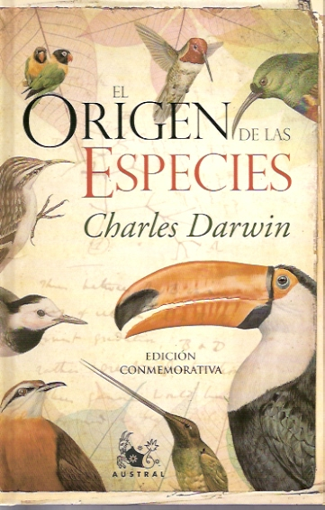
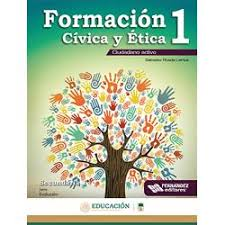

Libreria Universal
Bienvenidos a la Libreria Universal
Aca podes encontrar distintos tipos de libros donde alguno de estos te pueden ayudar a resolver distintas
preguntas que usted tenga sobre los temas que estos libros presentan.
¿Que tipos de libros tenemos?
ㅤ
Poemas y Novelas
Federico García Lorca nació el 5 de junio de 1898 en Granada, Fuente Vaqueros y falleció el 19 de agosto de 1936.
El fue un poeta, dramaturgo y prosista español.
La temática de sus poemas es variada aunque podemos destacar un elemento común: la frustración. Además de los
temas ya mencionados como la infancia o la revolución social, Lorca escribía sobre la búsqueda de los orígenes, el
amor, el sexo y la muerte. Todos estos temas solían estar marcados por la frustración.

Greta Alonso es el seudónimo de una autora nacida en los ochenta cerca del Cantábrico. Licenciada en Ingeniería,
se conoce su voz, gran parte de sus vivencias, pero no su rostro ni su auténtico nombre, ya que de ese modo logra
compaginar su actividad profesional en el campo de las ciencias con su pasión por las letras.
Esta novela trata sobre una persona que nadie sabe quién es, solo que pinta. Se desconoce si es joven o anciano,
si es hombre o una mujer. De Dama solo se ha oído que emplea su mano izquierda, que ejecuta sus trabajos como
acuchillando el lienzo. Salvo aquellos que las compran, nadie ha visto lo que oculta bajo el papel de estraza con
el
que envuelve sus pinturas.
Con cada subasta, su obra se revaloriza y la incógnita sobre su identidad aumenta; pero cuando Lucas Cúe, el
popular
deportista, aparece brutalmente asesinado, el inspector Valtierra debe encontrar un nexo entre el crimen y el
cuadro
más reciente del misterioso pintor; descubrir quién acecha tras el seudónimo.
ㅤ
Libros de Divulgación científica
En él nos ofrece la narración de los orígenes que se deriva de la ciencia moderna y nos permite comprender la
importancia de las cosmogonías para hallar nuestro lugar en el universo. Para el autor la ciencia nos narra
nuestros
orígenes con una historia mucho más imaginativa y poderosa que cualquier relato mitológico.

En la década de 1850, Darwin escribió un libro controversial e influyente llamado El origen de las especies. En
él, propuso que las especies evolucionan (o, como lo dijo él, tienen "descendencia con modificaciones") y que
todos
los seres vivos pueden rastrear su ascendencia a un antepasado común.
ㅤ
Libro de Texto

La asignatura de Formación Cívica y Ética representa un espacio curricular, organizado y sistemático, para la
recuperación de saberes, experiencias, habilidades, actitudes y valores de los alumnos en torno al mundo social en
que viven y el lugar que ocupan en el mismo.
ㅤ
Libros de Autoayuda

Cómo ganar amigos e influir sobre las personas es el libro clásico sobre la relación y las habilidades de
comunicación. Las habilidades de comunicación son esenciales para la productividad: nos guste o no, no vivimos
solos
en el mundo, y gran parte del tiempo tienes que tratar con otras personas para hacer las cosas.

Este libro tiene como objetivo describir las distintas personalidades tóxicas más frecuentes con las cuales
convivimos a diario en los diferentes medios en los que nos movemos (el ambiente laboral, la familia, las
instituciones, los amigos) y lo que nos causan dichas toxicidades, es decir sus efectos y sus consecuencias.Nos
brinda información para saber qué hacer y cómo hacer para ser libre de todas ellas y de todas estas personas que a
diario tratan de enfermarnos la vida.
Formulario